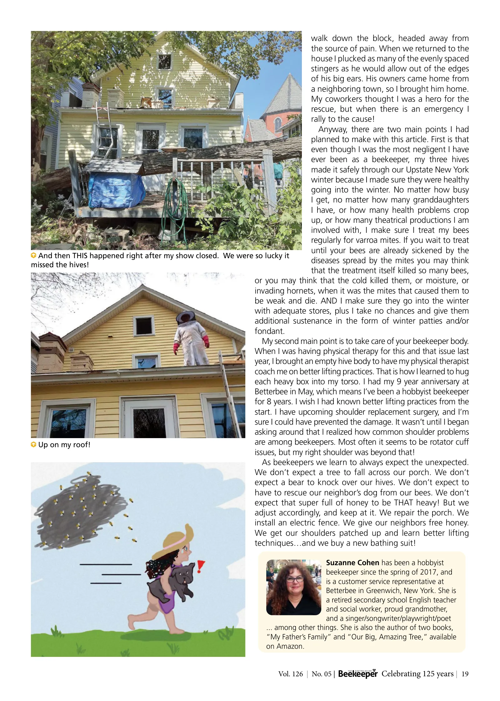

walk down the block, headed away from
the source of pain. When we returned to the
house I plucked as many of the evenly spaced
stingers as he would allow out of the edges
of his big ears. His owners came home from
a neighboring town, so I brought him home.
My coworkers thought I was a hero for the
rescue, but when there is an emergency I
rally to the cause!
Anyway, there are two main points I had
planned to make with this article. First is that
even though I was the most negligent I have
ever been as a beekeeper, my three hives
made it safely through our Upstate New York
winter because I made sure they were healthy
going into the winter. No matter how busy
I get, no matter how many granddaughters
I have, or how many health problems crop
up, or how many theatrical productions I am
involved with, I make sure I treat my bees
regularly for varroa mites. If you wait to treat
until your bees are already sickened by the
diseases spread by the mites you may think
that the treatment itself killed so many bees,
or you may think that the cold killed them, or moisture, or
invading hornets, when it was the mites that caused them to
be weak and die. AND I make sure they go into the winter
with adequate stores, plus I take no chances and give them
additional sustenance in the form of winter patties and/or
fondant.
My second main point is to take care of your beekeeper body.
When I was having physical therapy for this and that issue last
year, I brought an empty hive body to have my physical therapist
coach me on better lifting practices. That is how I learned to hug
each heavy box into my torso. I had my 9 year anniversary at
Betterbee in May, which means I’ve been a hobbyist beekeeper
for 8 years. I wish I had known better lifting practices from the
start. I have upcoming shoulder replacement surgery, and I’m
sure I could have prevented the damage. It wasn’t until I began
asking around that I realized how common shoulder problems
are among beekeepers. Most often it seems to be rotator cuff
issues, but my right shoulder was beyond that!
As beekeepers we learn to always expect the unexpected.
We don’t expect a tree to fall across our porch. We don’t
expect a bear to knock over our hives. We don’t expect to
have to rescue our neighbor’s dog from our bees. We don’t
expect that super full of honey to be THAT heavy! But we
adjust accordingly, and keep at it. We repair the porch. We
install an electric fence. We give our neighbors free honey.
We get our shoulders patched up and learn better lifting
techniques…and we buy a new bathing suit!
Suzanne Cohen has been a hobbyist
beekeeper since the spring of 2017, and
is a customer service representative at
Betterbee in Greenwich, New York. She is
a retired secondary school English teacher
and social worker, proud grandmother,
and a singer/songwriter/playwright/poet
... among other things. She is also the author of two books,
“My Father’s Family” and “Our Big, Amazing Tree,” available
on Amazon.
Up on my roof!
And then THIS happened right after my show closed. We were so lucky it
missed the hives!
Vol. 126 | No. 05 |
Celebrating 125 years | 19